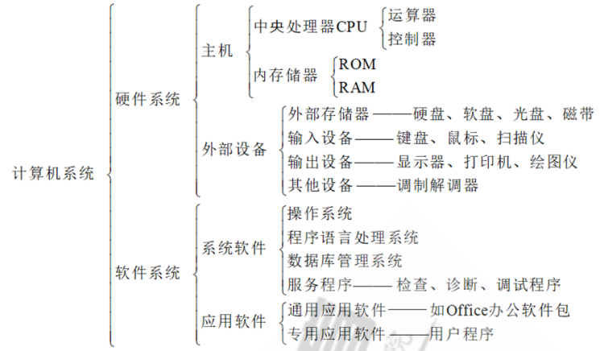
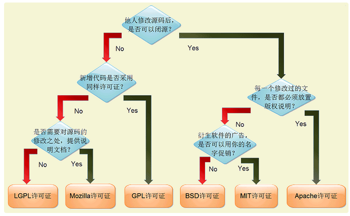
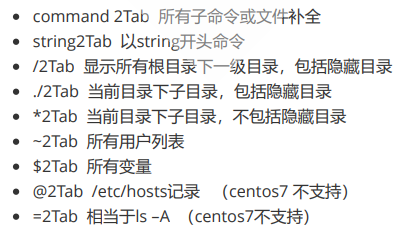

第一章
第一章
1.一个完整计算系统的简要介绍
一个完整的计算机系统由软件和硬件系统组成：
硬件：主要由中央处理器、存储器、输入输出控制系统和各种外部设备组成。中央处理器是对信息进行高速运算处理的主要部件，其处理速度可达每秒几亿次以上操作。存储器用于存储程序、数据和文件，常由快速的内存储器（容量可达数百兆字节，甚至数G字节）和慢速海量外存储器（容量可达数十G或数百G以上）组成。各种输入输出外部设备是人机间的信息转换器，由输入-输出控制系统管理外部设备与主存储器(中央处理器)之间的信息交换。
软件：软件分为系统软件和应用软件。系统软件由操作系统、实用程序、编译程序等组成。操作系统实施对各种软硬件资源的管理控制。实用程序是为方便用户所设，如文本编辑等。编译程序的功能是把用户用汇编语言或某种高级语言所编写的程序，翻译成机器可执行的机器语言程序。

2.学会进制转换，并简要举例完成转换
常见的进制有二、八、十、十六进制。
常见的十进制转换成二进制的方法：详情
3.制作教程，说明vmware软件如何下载安装
vmware最新下载安装教程详情
4.说明GPL和MIT开源协议的区别
最热门的开源许可有一下六种，包括LGPL许可证，Mozilla许可证，GPL许可证，BSD许可证，MIT许可证，Apache许可证,他们的区别下图可以清楚的表示出来

GPL协议更加强调开放、共享和社区合作，而MIT协议则更加注重商业应用和知识产权的保护，因此在不同的开源项目和应用场景下，开发者需要选择合适的开源协议。详情
5.制作2个安装教程，安装rocky8.5，ubuntu22.04,并结合xshell说明如何通过虚拟IP登入系统
rocky8.5的安装详情
ubuntu22.04的安装详情
xshell的使用详情
6.说明tab键补全命令以及补全路径的原理
系统首先会判断tab是内部命令还是外部命令，优先执行内部命令，内部命令：由shell自带的，而且通过命令形式提供，用户登录后自动加载并常驻内存中。外部命令：在文件系统路径下有对应的可执行程序文件，当命令执行时才被加载进入内存，执行完毕后从内存删除。
tab键可实现：命令补全、文件名补全、路径补全，如果安装了bash-completion软件，在输入命令选项时键入tab则为命令选项补全。
双击tab键：

本博客所有文章除特别声明外，均采用 CC BY-SA 4.0 协议 ，转载请注明出处！